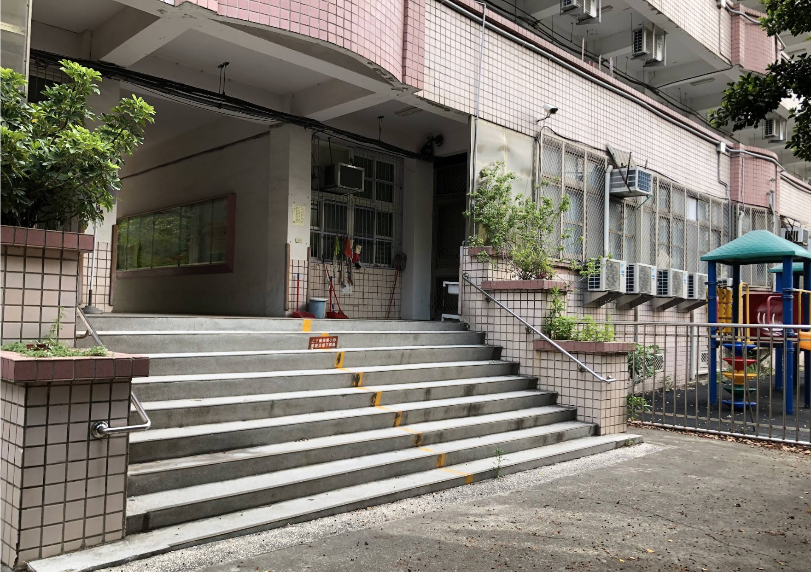

3/14學習重點
這週教了插入圖片、製作條列式清單
- 這是無序清單「ul」的預設樣式，是實心圓
- 不管是有序清單「ol」還是無序清單「ul」，在裡面的每一點(條)都需用「li」包起
- 「ul」裡面裡面還可以再包「ul」，這是第二層的預設樣式【空心圓】
- 這是在開頭的「ul」裡加上「type=""」，依裡面寫的不同單詞能讓標記樣式改變
- 當""裡面寫的是「disc」，代表是【實心圓】，與預設樣式相同
- 當""裡面寫的是「circle」，代表是【空心圓】
- 當""裡面寫的是「square」，代表是【正方形】
- 這是有序清單「ol」的預設樣式，是【阿拉伯數字1~n】
- 一樣也可以包很多層，但預設樣式都是【阿拉伯數字1~n】
- 這是在開頭的「ol」裡加上「type=""」，依裡面寫的不同單詞能讓標記樣式改變
- 當""裡面寫的是「1」，代表是【阿拉伯數字1~n】，與預設樣式相同
- 「type=""」空一格後加上「start=""」，可以改變起始的數值
- 當""裡面寫的是「5」，代表標記會從5開始(5~n)
- 當type的""裡面寫的是「A」，代表是【大寫英文字母】
- 當start的""裡面寫的是「4」，代表標記會從D開始(ABCD)
- 其他樣式的標記也可以用start去改變起始數值
- 若樣式本身並不是無限的值，則可能在第一個標記後繼續照順序疊加
- 當start的""裡面寫的是「30」，代表標記已輪過一輪(A)，再多4個(D)
- 當type的""裡面寫的是「a」，代表是【小寫英文字母】
- 當type的""裡面寫的是「i」，代表是【小寫羅馬數字】
- 當type的""裡面寫的是「I」，代表是【大寫羅馬數字】
以下的標記均為課外補充
- 這是在開頭的「ul」(無序)或「ol」(有序)裡加上「style="list-style-type:『』;"」，依『』裡面寫的不同單詞能讓標記樣式改變
- 當""裡面寫的是「circle」，代表是【空心圓】，與type="circle"的結果相同
- 當「style="list-style-type:『』;"」的『』裡面寫的是「disc」，代表是【實心圓】，與預設樣式、type="disc"的結果相同
- 當「style="list-style-type:『』;"」的『』裡面寫的是「square」，代表是【正方形】，與type="square"的結果相同
- 當「style="list-style-type:『』;"」的『』裡面寫的是「none」，代表是【無標記】
- 當「style="list-style-type:『』;"」的『』裡面寫的是「decimal」，代表是【阿拉伯數字1~n】，與ol相同，但無法更改起始數值(start)
- 當「style="list-style-type:『』;"」的『』裡面寫的是「lower-roman」，代表是【小寫羅馬數字】
- 當「style="list-style-type:『』;"」的『』裡面寫的是「upper-roman」，代表是【大寫羅馬數字】
- 當「style="list-style-type:『』;"」的『』裡面寫的是「lower-alpha」，代表是【小寫英文字母】
- 當「style="list-style-type:『』;"」的『』裡面寫的是「upper-alpha」，代表是【大寫英文字母】
- 當「style="list-style-type:『』;"」的『』裡面寫的是「cjk-ideographic」，代表是【國字小寫數字】
- 若是有序清單(ol)，則可再「style="list-style-type:『』;"」後面加「start=""」，一樣可以改變起始數值
一個「hr」代表一條橫線

使用「img src=""」可插入圖片，""中寫的是圖片的檔案名稱，須包含副檔名，
且圖片需要與程式放在同一個資料夾裡，po上網時也須一並上傳至資料夾
可在後面加上「width=""」、「heigh=""」，調整長度、高度，只寫其中一個會等比例放大縮小，但若兩個都寫可能破壞比例(沒有特意計算比例的話)
以下的圖片均為課外補充
若在後面加上「alt=""」，則可在圖片跑不出來時顯示""中的文字
用「style=""」可更改圖片樣式，
裡面寫「border-radius: px;」，會使圖片的角變為圓角
裡面寫「box-shadow: 5px 5px 10px gray;」，會產生陰影
加上「width="100%" style="max-width: px/auto; height: px/auto;"」可讓圖片隨網頁大小改變(其中一個數值是auto)
加上「style="transition: transform 0.3s; cursor: pointer;"
onmouseover="this.style.transform='scale(1.1)';"
onmouseout="this.style.transform='scale(1)';"」可讓圖片在滑鼠碰到時產生反應(懸浮)
加上「loading="lazy"」可讓圖片在使用者進入網站時才載入，提升網站效能
用「a href=""」、「/a」包裹住「img src=""」，可讓使用者點圖片前往某網頁(將圖片變為超連結)，但不會新開視窗，會在同一個網頁裡